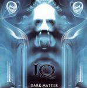

Home Artist links Label link

iQ - Dark Matter
| Artist: | iQ |
| Title: | Dark Matter |
| Label: | GEP GEPCD 1034 |
| Length(s): | 52 minutes |
| Year(s) of release: | 2004 |
| Month of review: | [09/2004] |
Line up
Peter Nicholls - vocals
Martin Orford - keys
Mike Holmes - guitars
Jon Jowitt - bass
Paul Cook - drums
Tracks
| 1) | Sacred Sound | 11.40
|
| 2) | Red Dust Shadow | 5.53
|
| 3) | You Never Will | 4.54
|
| 4) | Born Brilliant | 5.20
|
| 5) | Harvest Of Souls | 24.29
|
Summary
The music
It's been more than twenty years now since iQ's debut. Over the time the band has managed to keep the albums coming at a steady flow, or maybe more steady trickle. This is yet another installment displaying many of the band's strengths and some weaknesses as well. We've got Mike Holmes' lingering guitars, Nicholls' somewhat odd voice, which is something of an acquired taste and Cook's choppy drumming, which has improved over the years. Orford's synths regularly take on the form of a gentle Hammond sound now, although there is a lot of more traditional sounding synth as well. The mellotron is nearly gone (to my detriment). Jowitt's bass remains a solid, well, base.
Opener Sacred Sound seems to be an overview of iQ's past. At times the tension of the first albums comes through, as does the poppy feel of the Menel era band. And of course the post Menel era is very dominant. Red Dust Shadow opens very gently with acoustic guitars and Nicholls' vocals. Halfway through there is a short full instrumental break, returning as soon as can be to the opening gentleness.
Harvest Of Souls is a long track taking us through a great many different emotions. Some awful (such as the repeated whining "America" bits), others great (the eclectic instrumental section in the middle of the track)
Conclusion
Although Nicholls' voice is very fit for creating atmospheres -it's great for the eerie tracks of the first two iQ albums- I feel it's too flat and lacks the strength to carry vocal sections in which the other instruments play a supporting role only. Still, in the post Menel era iQ have repeatedly written songs with such sections. This album contains such as well. These tracks make for an alternation between the strong instrumental sections -which do need vocal sections to exist- and the weaker sung parts. This is the reason why there is no later day iQ CD I like all round (unlike the first two, I might add). This album deploys a lot of those vocal sections, and even though Nicholls does pretty well at singing them more than speaking, it's just not enough.
Where I feel this disc lacks is in the memorable moments section. Outside the closing of Born Brilliant (yes, featuring the all pervading mellotron), the melodic top of Red Dust Shadow and the eclectic instrumental section in Harvest Of SOuls there just aren't enough to carry the album. Thus this album could be described as professional or well crafted, but not so much as moving. Apart from the Hammond the sound is very much like that on previous albums, and I can't help feeling that this album does not add enough to the spectrum that is iQ. A bit of a disappointment that can't be washed away by the great moments that are there. A laugh and a tear sum it all up.
Having said all that: those really into the sound on the iQ albums preceding this one, will quite likely find this album to their liking.
© Roberto Lambooy